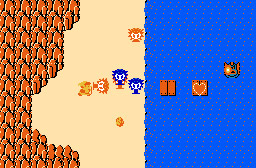

by Ted Felix
Sprites are small pictures that can be moved around the screen and animated. By using sprites, you can make games that have a more realistic look. Sprites are two dimensional (flat) but if you are good at drawing, you can make them look like they have depth.
For example, Nintendo's Legend of Zelda is an entirely sprite-based game, and perhaps one of the best. Take a look:
But, there's no reason to stick with a 2D look when you can fake a 3D look. Age of Empires is a good example of 3D-looking sprites.
(Age of Empires for more 3D-looking sprites)
QBASIC has two statements that support sprites: GET and PUT. We will be working with GET and PUT quite a bit in this section, but in the end we will have to find a new way to draw sprites. There are some pretty serious problems with GET and PUT as you will see.
If you need to brush up on your QBASIC skills, see my QBASIC Tutorial before you continue:
http://www.tedfelix.com/qbasic
Since sprites are small pictures, we need a picture to make a sprite. There are many ways to do this. The simplest way is to first draw the picture on the screen using the graphics statements in QBASIC (PSET, LINE, CIRCLE, PAINT, etc...). Let's start with a simple filled in CIRCLE using CIRCLE and PAINT:
SCREEN 13
CLS
CIRCLE (4, 3), 4, 4
PAINT (4, 3), 12, 4
Once we have the picture on the screen, we can use GET to copy the picture from the screen into an array. Normally we think of arrays as being lists of variables. GET treats an array as if it is simply a chunk of memory where it can store a picture. We need to make sure the array is big enough to hold our picture. For this picture, we will need an array that can hold 37 integers (%):
DIM Ball%(37)
How did I know it had to be 37? Well, there is a formula you can use to figure this out, but since this program is so small and there's only one sprite, I used trial-and-error. I kept picking numbers and trying to run the program until I found the right number. QBASIC will give you an error if the array is too small. See the QBASIC Help topic "Screen Image Arrays and Compatibility" for the formula.
Now that we have our array, we can use GET to copy the picture from the screen into the array:
GET (0, 0)-(8, 7), Ball%
The coordinates (0, 0)-(8, 7) define a rectangle on the screen. This is done the same way you tell the LINE statement where you want to draw a box on the screen. GET will copy the picture from that rectangle into the Ball% array.
Once the sprite is stored in the Ball% array, we can draw it anywhere we want on the screen using PUT. To prove that all of this has worked, let's use PUT to copy the picture from the Ball% array back to the screen. How about near the center of the screen:
PUT (160, 100), Ball%
So, here's our first sprite example all together and with comments (comments are good):
SCREEN 13
CLS
' Draw a filled circle for our sprite
CIRCLE (4, 3), 4, 4
PAINT (4, 3), 12, 4
' Set aside enough space to hold the sprite
DIM Ball%(37)
' Get the sprite into the Ball% array
GET (0, 0)-(8, 7), Ball%
' Display the sprite elsewhere on the screen
PUT (160, 100), Ball%
Running this example, you will see a filled circle in the upper left corner of the screen. This is the first circle we drew to make the sprite. Then you will see another filled circle near the center of the screen. This is a copy of the sprite made by the PUT statement.
I have to admit that I am writing this chapter of the book first. So, I'm assuming that I've already discussed the basics of motion in an as yet unwritten chapter on real-time text games. I will fairly quickly go over motion here, but not discuss it in too much depth.
Making a sprite move is very similar to making an object move in any other kind of 2-D game. We keep track of the sprite's X and Y position, and change them as time goes by. Here's an example that adds motion to our sprite:
DEFINT A-Z ' Makes things faster
SCREEN 13
CLS
' Draw a filled circle for our sprite
CIRCLE (4, 3), 4, 4
PAINT (4, 3), 12, 4
' Set aside enough space to hold the sprite
DIM Ball%(37)
' Get the sprite into the Ball% array
GET (0, 0)-(8, 7), Ball%
CLS
' Screen size
CONST XMax = 320
CONST YMax = 200
' Starting position of the sprite
X = 160
Y = 100
' Motion
DX = 1
DY = 1
DO
' Draw the sprite at its current position
PUT (X, Y), Ball%
' Save the old position so that we can remove the sprite before
' we redraw it in its new location.
PX = X
PY = Y
' Change the sprite's position
X = X + DX
Y = Y + DY
' If we have hit the right-hand side of the screen
IF X > XMax - 10 THEN
' Make the sprite go left
DX = -1
END IF
' If we have hit the left-hand side of the screen
IF X < 1 THEN
' Make the sprite go right
DX = 1
END IF
' If we have hit the bottom of the screen
IF Y > YMax - 9 THEN
' Make the sprite go up
DY = -1
END IF
' If we have hit the top of the screen
IF Y < 1 THEN
' Make the sprite go down
DY = 1
END IF
' Timing Loop. Pure Evil. Depends on computer speed.
' Change the 30000 to change the speed of the ball.
FOR I = 1 TO 30000
NEXT I
' Remove the sprite from the screen before redrawing
' it in its new position at the top of the loop.
PUT (PX, PY), Ball%
LOOP WHILE INKEY$ = ""
You might need to adjust the 30000 in the timing loop to get this to go at a reasonable speed on your computer.
The strangest thing about this example is how it uses PUT both to draw the sprite and to remove it. PUT can do this because it draws our sprite on the screen using something called an "exclusive or" or "XOR" for short. We will talk more about this later.
Using CIRCLE and PAINT is fast, and handy, but let's face it. It's hard to draw anything really interesting this way. For that, we need what's called a bitmap. A bitmap is a picture stored in a way a computer can understand. Since computers are most fond of numbers, it's no surprise that a bitmap is made up of numbers.
Here's an example of a tiny bitmap stored in DATA statements:
DATA 0,15, 0
DATA 15, 0,15
DATA 0,15, 0
It's like coloring by number. Where there is a 0, there will be a black dot (pixel) on the screen. Where there is a 15, there will be a white pixel on the screen. This particular bitmap is organized to be 3 pixels wide by 3 pixels high. It is very small as we will see when we draw it.
SCREEN 13
CLS
FOR Y = 0 TO 2
FOR X = 0 TO 2
READ DotColor
PSET (X, Y), DotColor
NEXT X
NEXT Y
This reads the bitmap from the DATA statements and draws it on the screen using PSET. You will see a very tiny diamond in the upper left corner of the screen. That's our bitmap.
Try changing the bitmap to this and see what it looks like.
DATA 0,15, 0
DATA 15, 0,15
DATA 15, 0,15
And finally, let's try a more colorful bitmap.
DATA 14, 0,13
DATA 0,15, 0
DATA 12, 0,11
Our bitmaps don't have to be tiny, we can make them as big as we want. Here's a bitmap that is 15 pixels wide by 15 pixels high. Hopefully you can cut and paste this one into QBASIC. Otherwise, it's a lot of typing. Can you guess what it is a picture of?
DATA 00,00,00,00,00,00,00,00,00,00,12,12,00,00,00
DATA 00,00,00,00,00,00,00,00,00,00,15,15,00,00,00
DATA 00,00,00,00,00,00,00,00,00,15,15,15,15,00,00
DATA 00,00,00,00,00,00,00,00,00,15,15,00,15,00,00
DATA 00,00,00,00,00,00,00,00,15,15,15,15,15,14,00
DATA 00,00,00,00,15,15,15,15,15,15,15,15,15,14,14
DATA 15,00,15,15,15,15,00,15,15,15,15,15,00,00,00
DATA 00,15,15,15,15,00,15,15,15,15,15,00,00,00,00
DATA 15,00,15,15,00,15,15,15,15,15,15,00,00,00,00
DATA 00,15,15,15,15,00,00,15,15,15,15,00,00,00,00
DATA 15,00,15,15,15,15,15,15,15,15,00,00,00,00,00
DATA 00,00,00,00,00,00,15,15,15,00,00,00,00,00,00
DATA 00,00,00,00,00,00,00,14,00,00,00,00,00,00,00
DATA 00,00,00,00,00,00,00,14,00,00,00,00,00,00,00
DATA 00,00,00,00,00,00,14,14,14,00,00,00,00,00,00
SCREEN 13
CLS
FOR Y = 0 TO 14 ' For each row
FOR X = 0 TO 14 ' For each column
READ DotColor
PSET (X, Y), DotColor
NEXT X
NEXT Y
You can use graph paper and colored pencils to design your bitmaps, then copy them block by block into DATA statements. Making large bitmaps like this can take a lot of time. Fortunately, there are bitmap editors that can make the job much easier. Unfortunately, those bitmap editors can't write DATA statements for you. However, if you wanted to, you could write your own bitmap editor in QBASIC and have it write the DATA statements you need. Might be a good project.
See the links section at the end for some bitmap editors that might be of interest.
Combine the bitmap above with GET and PUT, and you've got yourself a new sprite.
Since DATA statements and files are pretty much the same thing, you could store your bitmaps in files, and read them in from those files.
The nice thing about DATA statements is that they are always right where you can find them. The bad thing is that DATA statements make your program bigger. I also think DATA statements look a bit messy.
The nice thing about files is that they do not make your program bigger (or messier). The bad thing about files is that you need to find them on the hard disk. Very large game programs usually store their sprites in files to reduce the size of the program.
Let's go back to the bouncing ball program, and this time we'll add a little bit of a background. We are going to make half of the screen yellow before we start drawing the ball. We can do this by adding a LINE statement after we set up the screen size constants. Here's the part of the program we've modified:
...
' Screen size
CONST XMax = 320
CONST YMax = 200
' NEW: Make half the screen yellow.
LINE (0, 0)-(XMax / 2, YMax), 14, BF
' Starting position of the sprite
X = 160
Y = 100
...
Notice how as the ball enters the yellow area, it changes colors. Although this is an interesting effect, it might not be what we want. Many times we will want the background and foreground to stay the same.
The problem is XOR. As I mentioned before, we are using an exclusive OR, or "XOR" for short. While XOR is really great for drawing and erasing using the same bitmap, XOR causes problems when it encounters a background other than black. We need something new.
One possible solution is to use a mask along with the bitmap. We PUT the mask with AND, then PUT the bitmap with OR. This works fine. However, there are so many problems with PUT that we are going to have to stop using it. Before we do, we will discuss why in the next section.
The first problem with PUT is that it will not clip. If you use PUT too close to the edge of the screen, QBASIC will stop your program with an error. Try this:
SCREEN 13
CLS
' Create the sprite
CIRCLE (4, 3), 4, 4
PAINT (4, 3), 12, 4
DIM Ball%(37)
GET (0, 0)-(8, 7), Ball%
' Draw it past the right edge
PUT (312, 100), Ball%
SCREEN 13 goes all the way out to 320 on the X coordinate, yet QBASIC gives us an Illegal Function Call when we try to draw our sprite at X coordinate 312. Why? Because the sprite would go off the right edge of the screen. For our bouncing ball, this isn't a problem because we don't want it to go off the edge of the screen. In a more complex game, this could be a serious problem.
Consider a game where the screen scrolls (shifts) from left to right. It would be nice if the sides smoothly came in on the left, and went out on the right. But, if you can't draw your sprites at the edges of the screen, the left and right edge would suddenly disappear (or you'd get an illegal function call).
It would be better if PUT would "clip" the sprite by cutting it off where the screen ends. Unfortunately, PUT cannot do this. This means we need to make our own PUT that can do clipping.
The second problem with PUT has to do with page-flipping which will be discussed later.
Why is PUT so bad? When PUT was originally created, computers were incredibly slow. No one ever imagined being able to write a serious game using BASIC. So, PUT wasn't taken too seriously. Now that computers are incredibly fast, we can write our own PUT, or use someone else's to solve the problems with QBASIC's PUT.
Now that I've convinced you that we need a new PUT, it's time to make one. Our first goal is to get something that acts like QBASIC's PUT. It has to be able to draw a bitmap on the screen. Although we could write a new GET, there really isn't a need. Most sprites will be bitmaps, so we can use DATA statements or files instead of GET to fill in our bitmap array.
Here's the first example of working with sprites and avoiding PUT. Instead of GET, we copy the bitmap from the DATA statements into an array. Then we use PSET to draw what's in the array to the screen.
DEFINT A-Z
SCREEN 13
CLS
' Bitmap for the sprite
DATA 0, 0, 0,15,15,15, 0, 0, 0
DATA 0,15,15, 9, 9, 9,15,15, 0
DATA 15, 9, 9, 9, 9, 9, 9, 9,15
DATA 15, 9, 9, 9, 9, 9, 9, 9,15
DATA 15, 9, 9, 9, 9, 9, 9, 9,15
DATA 0,15,15, 9, 9, 9,15,15, 0
DATA 0, 0, 0,15,15,15, 0, 0, 0
' An array to hold the sprite
DIM Ball%(8, 6)
' Read the sprite in from DATA to the array
FOR Y = 0 TO 6
FOR X = 0 TO 8
READ Ball%(X, Y)
NEXT X
NEXT Y
' Draw the sprite from the array onto the screen
FOR Y = 0 TO 6
FOR X = 0 TO 8
PSET (X, Y), Ball%(X, Y)
NEXT X
NEXT Y
Note that this is a two-dimensional array. Two-dimensional arrays are perfect for this kind of problem. After all, a bitmap is two-dimensional.
Before we go any further, we really need to break the drawing portion of this program off into a SUB. We will be needing it in many places when we start writing more complicated sprite code, so we don't want to copy that piece of code everywhere. Here it is as a SUB:
SUB PUT2 (Sprite() AS INTEGER, XSize AS INTEGER, YSize AS INTEGER, X AS INTEGER, Y AS INTEGER)
' Draw the sprite from the array onto the screen
FOR YP = 0 TO YSize - 1
FOR XP = 0 TO XSize - 1
PSET (X + XP, Y + YP), Sprite%(XP, YP)
NEXT XP
NEXT YP
END SUB
It is unfortunate that there is no way to break long lines in QBASIC. That first line is pretty long and ugly.
Now we can call the SUB like this:
PUT2 Ball%(), 9, 7, 0, 0
The first argument "Ball%()" is the array that holds our sprite. PUT2 will copy from that array to the screen. The next two arguments (9, 7) are the size of the sprite in pixels (9 across, 7 down). The last two arguments (0, 0) are the X and Y position where the sprite should be drawn.
Here is the complete program using the new SUB.
DECLARE SUB PUT2 (Sprite() AS INTEGER, XSize AS INTEGER, YSize AS INTEGER, X AS INTEGER, Y AS INTEGER)
DEFINT A-Z
SCREEN 13
CLS
' Bitmap for the sprite
DATA 0, 0, 0,15,15,15, 0, 0, 0
DATA 0,15,15, 9, 9, 9,15,15, 0
DATA 15, 9, 9, 9, 9, 9, 9, 9,15
DATA 15, 9, 9, 9, 9, 9, 9, 9,15
DATA 15, 9, 9, 9, 9, 9, 9, 9,15
DATA 0,15,15, 9, 9, 9,15,15, 0
DATA 0, 0, 0,15,15,15, 0, 0, 0
' An array to hold the sprite
DIM Ball%(8, 6)
' Read the sprite in from DATA to the array
FOR Y = 0 TO 6
FOR X = 0 TO 8
READ Ball%(X, Y)
NEXT X
NEXT Y
' Draw the sprite from the array onto the screen
PUT2 Ball%(), 9, 7, 0, 0
SUB PUT2 (Sprite() AS INTEGER, XSize AS INTEGER, YSize AS INTEGER, X AS INTEGER, Y AS INTEGER)
' Draw the sprite from the array onto the screen
FOR YP = 0 TO YSize - 1
FOR XP = 0 TO XSize - 1
PSET (X + XP, Y + YP), Sprite%(XP, YP)
NEXT XP
NEXT YP
END SUB
Not bad at all. It wouldn't be too big of a jump to add some motion to our ball, and see how well this works.
We'll eventually get to clipping, but first we will solve the infamous "flicker" problem. This will have an effect on how we do clipping, so we'll get it out of the way first.
In a simple ball-bouncing program, it is hard to see the need for page-flipping, but imagine a much larger game. One with hundreds of sprites on the screen at one time. Each time the sprites move, we need to erase them from the screen and redraw them. Not only that, when we erase them, we have to restore the background that was under them so they don't destroy it. What a mess. What a lot of work. This could take quite a bit of time. And all that time, the user will see what we are doing. The user will see us erasing and redrawing. It isn't pretty.
Page-flipping to the rescue! Page-flipping lets us hide what we are doing, and it will also let us simply start from scratch and redraw the entire screen instead of worrying about redrawing pieces of the background all the time. If we have hundreds of sprites, this will be a real time-saver.
Page-flipping (also called double-buffering) solves these problems by letting us draw to an invisible screen (a memory buffer, or double-buffer), then copy that invisible screen to the visible screen. This way our drawing process can't be seen.
QBASIC's PCOPY command can be used to do page-flipping. However, it only works in certain SCREEN modes. SCREENs 7 through 9 are the most notable since they provide color. Let's start with a simple example of something that could easily benefit from page-flipping. Try this program:
SCREEN 9
DO
' Start with a cleared screen each time
CLS
' Draw something time-consuming
FOR I = 1 TO 1000
x1 = INT(RND * 640)
y1 = INT(RND * 350)
x2 = INT(RND * 640)
y2 = INT(RND * 350)
c = INT(RND * 16)
LINE (x1, y1)-(x2, y2), c
NEXT I
LOOP
It goes so slow you can see it building up the picture each time before it clears the screen and starts to build up the next picture. Try making the "1000" larger to make the effect worse. This is pretty awful to watch. Now try the following changes. Note that only the SCREEN line has changed, and the PCOPY command has been added in this new version:
' NEW: Screen 9 with 0 as the "active page" and 1 as the "visible page"
SCREEN 9, 0, 0, 1
DO
' Start with a cleared screen each time
CLS
' Draw something time-consuming
FOR I = 1 TO 1000
x1 = INT(RND * 640)
y1 = INT(RND * 350)
x2 = INT(RND * 640)
y2 = INT(RND * 350)
c = INT(RND * 16)
LINE (x1, y1)-(x2, y2), c
NEXT I
' NEW: Flip the page to the screen
PCOPY 0, 1
LOOP
This is much better. We see the image each time, not the drawing of the image. This is what page-flipping is all about.
SCREEN 9 provides two pages for us to work with, page 0 and page 1. The SCREEN command lets us decide how we will work with those pages. In the previous program, the SCREEN line has mode "9" specified. The next "0" is ignored. After that is a "0" for the "active page". This is the page where the LINE command will draw. The next value, a "1" specifies that page 1 will be the "visible page". This is the page that is displayed on the screen. All together, this says that we will be drawing on mode 9's page 0 and looking at mode 9's page 1. This seems like we would never see anything at all. That would be true if it weren't for PCOPY. In fact, try commenting out PCOPY and see what happens. In a word, "nothing."
The PCOPY command copies everything from page 0 to page 1 almost instantly. So we can take our time drawing on page 0, then when we are done, use PCOPY to copy what we drew to page 1 so the user can see it.
As an aside, I cheated to make the program even slower. I didn't do a DEFINT A-Z. This means all the variables are treated as single-precision floating point. Try throwing in a DEFINT A-Z and you'll notice a slight performance boost.
Unfortunately, page-flipping with PCOPY is only available in a few SCREEN modes. It isn't available in the more colorful modes like SCREEN 13. If we want to do page-flipping in SCREEN 13, we'll have to write our own version of PCOPY.
To make our own PCOPY, we'll need a way to draw to a memory buffer, then copy that memory buffer to the screen. This is called "double-buffering". The fastest way to copy something to the screen is to use QBASIC's PUT. It is written in Assembler, and is very fast. Its drawbacks when working with sprites (clipping, etc...) are not an issue when we are copying from a memory buffer to the entire screen. The only thing we need to figure out is how to draw into a memory buffer that PUT can understand.
Since we will use PUT to flip our memory buffer to the screen, we must understand the format of a memory buffer used by PUT. Then we can write some SUBs that allow us to draw in a PUT-compatible memory buffer. Our most important SUB will be our PUT2() that we wrote for drawing sprites.
(Sample using our own double-buffer and PUT)
Where there is a special value in the data, don't draw anything. Pick a number that isn't a valid color so that we still have access to all the colors.
(Sample doing transparency)
Check the bounds. If out of bounds, don't draw. Update PUT2() to be bounds-aware.
(Sample with clipping)
The above examples have been designed primarily for education, not for speed. Many improvements can be made to increase performance. Here are some suggestions.
Profile. Be sure to do profiling to make sure your changes have actually improved things. (Give an example of profiling in QBASIC)
Assembler. Rewrite critical parts of the code in assembler. Our PUT2() routine is a good candidate.
Space. Make your sprites more space-efficient by storing them using bytes instead of 16-bit words.
???
Pointless Products, Inc. has created a bitmap editor called QBPaint that exports QBASIC-ready bitmaps.
This is the outline I used to work on this section of the book. It is much more complicated than the book ended up. It discusses all the different directions you can go with sprites. In the end I decided to take the shortest possible path from PUT to page-flipping.
- Why Sprites?
- Sprites are fast.
- Sprites aren't always the best solution. But they usually are.
- Data Source
V Screen
V For simple geometric sprites (circles, boxes, lines) this is probably
the fastest and easiest. It will make the code much smaller.
V For bitmap sprites (characters, textures) this is horrid. It will make
the code much larger. Lots of PSET()s. Very hard to change.
V Avoids files, DATA statements, and data format decisions
V Generate: Draw with whatever QBASIC statements you need.
V Load: Just do a GET, and you are done.
V Display: PUT
V Sample: Basic sprite program with a moving sprite.
http://www.tedfelix.com/qbasic/sprite.bas
Mention unusual use of an array as simply a chunk of memory.
V What is the alternative?
V Storing bitmap data in DATA statements or files.
- Which is best, DATA statements or files?
V See QBASIC book for info on DATA statements.
- DATA statements and files are essentially the same thing. DATA
statements are just files within your program. Instead of using
OPEN/INPUT/WRITE/CLOSE, we use RESTORE and READ.
- DATA statements make your program larger, but are easier to find.
- A text file is easy to edit by hand, but slower to load
- A binary file is hard to edit by hand, but faster to load
* Deciding on a "format"
- I think I'll gloss this over in favor of using a human readable
format as much as possible. Only change the format when needed
to match the hardware.
- Regardless of whether you choose to store your bitmap data in
DATA statements, or files, you need to decide on a format for the
data.
- Your choices are: human-readable format, PUT format, your own format,
or a standard format like .BMP.
- Storing data in a human-readable format
- Easier to edit by hand
- Draw what you want, then use POINT() to build the dataset.
- Could write a converter from a standard format
- May already be sprite editors available. Pixel Art 1.0 is an example.
- Easy to load, but slow.
- Render to the screen, then use GET.
- Don't forget the header with sizes, etc...
- Sample: DATA statements and human-readable data. Moving sprite.
- Storing data in PUT format
- Harder to generate
- Draw what you want, do a GET, then dump the array.
- Could write a converter from a standard format
- Could easily write a converter from a "human-readable" format
if you can only find a sprite editor that exports that.
- May already be sprite editors available, if not, write one.
- Faster to load
- Get the length (LOF()), REDIM your array, then read the file into
the array.
- You can use BLOAD to read it in very quickly. See InitImageData in
MiniRPG.bas from REL. Or just read it in the old-fashioned way.
- Ties you to PUT? Harder to clip. Harder to do transparency.
- Look more carefully at MiniRPG.bas to see whether his data is in
PUT format, or in a more wasteful 16-bits per pixel format.
- Don't forget the header with sizes, etc...
- Sample: Generating the PUT file. Reading in the PUT file. Moving sprite.
- Storing data in your own format
- ??? Necessary. Again, look more closely at MiniRPG.bas to see what
he is doing in there. I have a feeling he is using a combination of
human-readable one integer per pixel, and a binary file format.
- Easier to manipulate with your own PUT routine.
- Data can be layed out so that it is easy to clip.
- Data can have special values that indicate transparency.
- Storing data in a standard image file format
- Easier to use industry-standard apps to generate
- More complex code required. Third-party is a good option here, but
third-party tends to be overkill.
- Slower to load since there might be lots of unnecessary header info.
- Sample: None. You're on your own here.
- Drawing
V PUT, already discussed above.
V Problems with "XOR".
V If there is a background, the sprite changes colors.
V If we don't use XOR, we make a mess in the background, and our
sprites can only be rectangular.
V Background buffering. Do a GET before you PUT, then PUT it back.
V Making your sprite something other than a square or rectangle.
V GET and PUT only understand squares and rectangles. So we
need tricks.
V Drawing a mask with AND, then the image with OR
- http://www.qbasicnews.com/tutorials.php?action=view&id=7
The mask can be made more simple by only having 255's in the
transparent areas, and 0's in the image areas. When AND-ed this
would black out the area where the image belongs. The border could
even be included in the mask and not in the image, although that would
be strange. Then when you OR the image in, the areas of the image that
are black (0) won't change the background, but the areas that are
non-black will have a nice black background to draw on. Transparency
is made by a 255 in the mask and a 0 in the image.
- Saying goodbye to PUT()
V The limitations of PUT() far outweigh the advantages.
X When computers were slow, PUT() was great. It is implemented in
assembler, so it is extremely fast, even on a very slow computer.
In this day and age of 3GHz+ machines, speed isn't an issue any more.
V PUT() will not clip. The program crashes instead. Not good.
V Transparency with PUT() requires two calls to PUT(), while we can
do this in one shot with our own version of PUT().
V Transparency with PUT() requires a mask. We can do transparency
without a mask and save space and work.
- Sample: New PUT routine that skips 0 pixel values and clips,
see Rel.Sprite() for ideas.
- If this isn't fast enough, you can always rewrite just this PUT()
routine in assembler for lightning speed. Assembler is perfect
for a small time-critical routine like this. I think the REL library
has something like this already.
- Avoiding flicker
V Because we first remove the image in its old location/state then
redraw it in its new, there will be a short period when the image
is not visible. This can cause flicker.
V Video hardware is designed to deal with this problem. PCOPY
V Background buffering no longer necessary as we will be redrawing the
entire screen each time.
- Background buffering would be faster than redrawing the whole screen.
But maybe we need to redraw the whole screen anyway.
- Do we have to redraw the entire screen if we want to scroll? Or do
games typically use a scroll routine, or some hardware feature?
- Check MiniRPG.bas for clues here.
V Double-buffering
V Page-flipping
- Sample: Full-on final version showing all the "best" techniques.
- More than one image in a file.
- Generating a file with more than one image.
- How to access each image with PUT().
- Sample: Simple animated sprite.
http://www.qbasicnews.com/tutorials.php?action=view&id=8
http://www.qbasicnews.com/tutorials.php?action=view&id=10
http://www.qbasicnews.com/tutorials.php
Search for qbasic sprite in google to get a good idea of the tricks involved.
Notice how this page is now number one in that search. Not sure how that
came about.